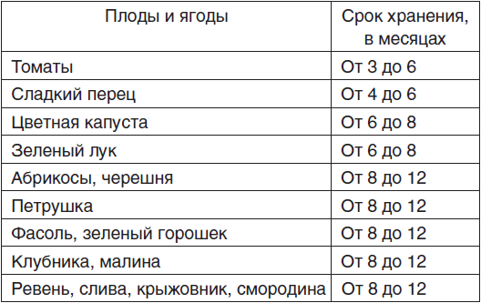

Способы замораживания

Способов замораживания существует несколько.
Фрукты можно заморозить пересыпанными сахаром, в виде сока или пюре, россыпью или с сахарным сиропом. Перед обычной заморозкой сырье необходимо промыть и перебрать, высыпать тонким слоем на поднос или сито и поместить на некоторое время в морозильную камеру. После заморозки сырье нужно пересыпать в полиэтиленовые пакеты и снова убрать в морозильник на хранение.
Если вы решили заморозить ягоды вперемешку с сахаром, следует сначала промыть их, перебрать и слоями уложить в подготовленную тару, пересыпая сахаром. Также можно заморозить плоды и ягоды в натуральном соке или сахарном сиропе. В зависимости от кислотности сырья сироп приготавливайте 40 %– или 60 %-ным. При более высокой концентрации вам потребуется больше времени для замораживания. Промытые ягоды и плоды следует поместить в тару и залить соком или сиропом. Сок предварительно осветлите, а также добавьте сахар и лимонную кислоту.
Срок хранения замороженных овощей и фруктов

Для удобства хранения замороженных овощей и фруктов чаще всего используются брикеты или полиэтиленовые пакеты. Упаковывая сырье, необходимо тщательно следить за тем, чтобы оно не контактировало с воздухом. Срок хранения пищевых продуктов зависит от температуры воздуха в морозильной камере или холодильнике: при – 6 °C плоды и овощи хранятся около 3–4 дней, а при —18 °C – от 4 до 12 месяцев в зависимости от вида сырья.
Замороженные свежие плоды, ягоды и овощиЗамораживание считается одним из самых эффективных способов хранения в домашних условиях свежих ягод, фруктов и овощей. В отличие от других способов консервирования при замораживании сохраняется большая часть питательных, вкусовых и ароматических веществ. Также его преимуществом является незначительное изменение химического состава продуктов: при данном способе сохраняется около 87 % витамина С.
Для замораживания фруктов, ягод и овощей в домашних условиях используются холодильники и морозильные камеры. При температуре – 12–25 °C можно быстро и равномерно заморозить продукты и обеспечить их хранение в течение нескольких месяцев.
Преимуществом быстрого замораживания является то, что при нем в межклеточных пространствах растительного сырья образуются довольно мелкие кристаллы льда, которые незначительно повреждают ткани при оттаивании. Размораживание после медленного замораживания может привести к серьезным повреждениям тканей продуктов и обильному выделению сока.
Для того чтобы достичь быстрой заморозки, следует разложить продукт тонким слоем или выставить минимальную температуру (в зависимости от марки холодильника). Вообще желательно отбирать для заморозки самые мелкие плоды, так как в них сохранится большее количество полезных веществ.
Помните, что качество замороженного продукта напрямую зависит от качества используемого сырья.
Прежде чем приступить к заморозке, тщательно переберите фрукты, овощи и ягоды, удалите поврежденные, отложите самые крепкие и сочные. Постарайтесь заложить сырье в морозильную камеру не позднее чем через 2 часа после сбора. Наиболее подходящими считаются ягоды и фрукты, находящиеся в стадии потребительской зрелости. Овощи рекомендуется собирать в начальной стадии зрелости, так как после заморозки их лучше всего подвергать тепловой обработке.
Перед замораживанием овощи, фрукты и ягоды нужно рассортировать, очистить, тщательно помыть, подсушить на сите. Для сохранения окраски овощей можно бланшировать их в течение нескольких минут в кипятке, а затем сразу же остудить, окунув в холодную воду.
Ягоды часто замораживают россыпью. Для этого подготовьте ягоды и рассыпьте их на противне или сите, после чего поставьте в морозильное отделение на несколько часов. Замороженный продукт пересыпьте в полиэтиленовые пакеты, завяжите их и поместите обратно в морозильную камеру.
Чаще всего замороженные продукты хранятся в полиэтиленовых пакетах или брикетах. Хранение в полиэтиленовых пакетах имеет свои преимущества: при таком способе влага не испаряется, а качество продукта сохраняется.
Для изготовления брикетов применяются самые разнообразные формы: стаканчики или коробки из парафинированного картона, жестяные консервные банки без крышек, полимерные формы и т. д.
Также можно использовать стеклянные банки, но при этом надо помнить, что заполнять их лучше не более чем на 90 % объема, так как при замораживании продукты увеличиваются в объеме.
Прежде чем поместить продукты в морозильную камеру, следует тщательно их запаковать, чтобы избежать контакта с воздухом. Плохо запакованные продукты будут выделять пары, которые конденсируются и образуют снеговую шубу на стенках морозильника.
При хранении замороженных овощей, фруктов и ягод необходимо следить за тем, чтобы они не подтаивали. Размороженные продукты надо сразу же использовать, повторной заморозке они не подлежат.
В том случае, если употребление размороженных продуктов затруднительно, подвергните их тепловой обработке, остудите и снова заморозьте.
Размораживать продукты желательно, поместив их на 30–45 минут в емкость с холодной водой.
При этом стоит избегать контакта продукта с воздухом и выделения сока. Можно использовать размораживание при комнатной температуре, но данный процесс длится довольно долго и имеет ряд недостатков: при таком способе теряется большая часть витамина С и сока, а также почти в 40 раз увеличивается рост микрофлоры.
Рекомендуется размораживать продукты, положив их на нижнюю полку холодильника, где поддерживается температура около 4 °C. Процесс оттаивания займет от 5 до 8 часов.
Замороженные в свежем виде овощи размораживать не стоит, желательно сразу же подвергнуть их тепловой обработке. Следует заметить, что ее продолжительность уменьшится в 2 раза.
Замороженные пюре и сокиЗамораживание пюре и соков из овощей, фруктов и ягод часто используется при домашнем консервировании. Это позволяет не подвергать продукты дополнительной тепловой обработке.
Для замораживания пюре и соки готовьте так же, как и обычно. Можно добавить сахар, соль и специи по вкусу, а после размораживания использовать продукт как готовое блюдо.
Замораживание зелениДля замораживания в домашних условиях наиболее подходящей считается зелень петрушки, сельдерея и укропа.
Укроп рекомендуется замораживать в начале лета. Так как он используется при приготовлении блюд в малых количествах, можно сделать заготовку на несколько месяцев. Перед замораживанием переберите зелень, тщательно промойте ее, несколько раз меняя воду, слегка подсушите и выложите в форму. Можно укладывать укроп в брикеты или замораживать его связанным в небольшие пучки.
Чтобы укроп не смерзся в общую массу, веточки или пучки следует замораживать по отдельности, а затем перекладывать в брикет, слегка приминая рукой.
Зелень петрушки и сельдерея замораживайте по такой же технологии или мелко нарубленными – вкусовые качества продукта при этом не меняются.
Замораживание грибовЗамораживание грибов является одним из самых популярных видов консервирования этого продукта.
При заморозке грибы сохраняют свой вкус, цвет, запах и питательную ценность. Единственным недостатком такого способа заготовки можно назвать то, что после тепловой обработки замороженные грибы теряют большую часть своего объема. Для того чтобы уменьшить объем грибов перед заморозкой, рекомендуется предварительно обжарить или отварить их.
Самыми подходящими для заморозки считаются шампиньоны, белые грибы, подосиновики, маслята и рыжики, а также те грибы, которые не содержат кислого или горького млечного сока.
Перед заморозкой свежих грибов необходимо тщательно их очистить, обрезать ножки и промыть в холодной проточной воде. После этого рекомендуется обсушить грибы на полотенце, нарезать тонкими ломтиками и разложить небольшими порциями по полиэтиленовым пакетам. При этом учитывайте, что в одном пакете должно быть столько грибов, сколько вы собираетесь использовать за один раз, чтобы не подвергать их вторичному замораживанию.
Подготовленные таким образом грибы могут храниться более 6 месяцев. Перед употреблением их не стоит размораживать – выложите грибы прямо в кастрюлю или на сковороду.
Заморозить можно и грибы, отваренные в воде или собственном соку.
Для того чтобы грибы сохранили свой вкус и запах, при варке добавьте в воду небольшое количество соли. Опускайте грибы в кипящую воду и варите около 10–20 минут в зависимости от вида грибов.
Больше питательных веществ сохраняется у грибов, отваренных в собственном соку. Этот процесс больше напоминает обжаривание: подготовленные грибы выкладываются в глубокую сковороду или сотейник и прогреваются на медленном огне до уменьшения первоначального объема в 3–5 раз. При нагревании посуды до 70–80 °C грибы начинают выделять сок и обжариваются в нем.
Часто для замораживания применяются грибы, жаренные без добавления соли и специй. Перекладывать в полиэтиленовые пакеты их стоит только после полного остывания.